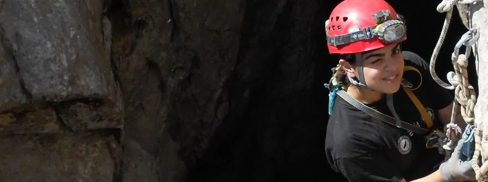

Diyarbakır Yeniköy Düdeni


Düdenin devamı, ilk inişten farklı olarak, kademelerle inen 80 cm genişliğinde bir tektonik çatlak şeklinde idi. Yanlış planlama neticesinde malzeme sıkıntısı çekmemizle, her kademenin ayrı bir çöp yığını şeklinde olması, üstüne zamanımızın da daralmış olması neticesinde düdenin sonuna ulaşamadan dönmek kararı aldık. Yaklaşık -100m derinliğe kadar ölçüm alındı, görebildiğimiz kadarıyla en az 120 m derinlik var.
Bu düdenle ilgili diğer bir gariplik ise, oldukça büyük bir yerleşim olan Yeniköy'de yeni ilkokul inşaatının 80m derinliğindeki bu mağaranın hemen dibine yapılıyor olması. Sayısı yüzü aşacak 7-15 yaş arası gencin düden etrafında koşturmasını, merakla yanına yaklaşmasını vb engellemek mümkün değil. Giren ciddi miktar su nedeniyle; çitle kapamak, ağzını telle örtmek vb. çözümler de pratikte mümkün görünmüyor. Buradan kazara düşüp hayatına kaybedecek çocukların vebalini kim taşıyacak, açıkçası belirsiz.
Son (yarım) günümüzde ise, Çayırdere Köyü'nde varlığından haberdar olduğumuz iki önemli mağaradan Ayı Mağarası'nı inceleme şansını elde ettik. Haritalaması günler sürecek karmaşıklıkta labirent yapısına sahip bu mağara, oluşumlar açısından da oldukça zengin ve çekici idi. Ayrıca ciddi bir yarasa kolonisi barındırması ve biospeleolojik zenginliği ile de önemli bir mağara. Önümüzdeki senelerde bu bölgede çalışmaya istekli mağaracılar için bolca malzeme olduğu anlaşılıyor.